Platform Changes |
| New high resolution icon |
The Eclipse SDK now has a shiny new icon. The icon is now in high resolution, making
for a much more polished appearance on modern operating systems.

|
| Open Resource dialog supports Show In |
The Open Resource dialog (Ctrl+Shift+R) has a new Show In > ... context menu item that
allows to show selected resources in a view instead of opening them in an editor.
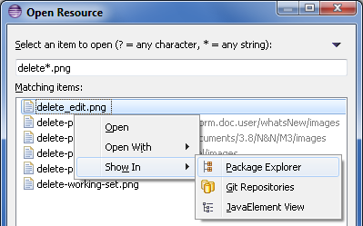
|
| Delete project dialog shows project location |
The Delete Resources dialog now shows the location of projects to be deleted on the file system:
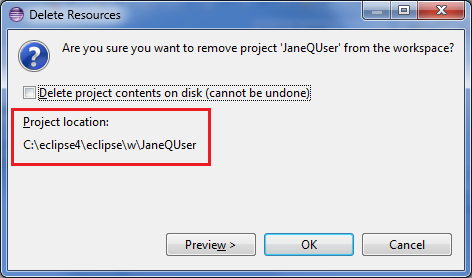
|
| Support for MacOS X Full Screen |
A new Window > Toggle Full Screen command is now supported on MacOS X Lion.
|
| Ant updated to 1.8.3 |
The bundled version of Apache Ant in the platform has been updated to version 1.8.3.
For more information on what is new in Ant 1.8.3 please see the Apache Ant release notes.
|
| Enhanced Editor Support for Ant 1.8.2 |
The Ant editor has been enhanced with support for the new extension-point
features in Ant 1.8.2.
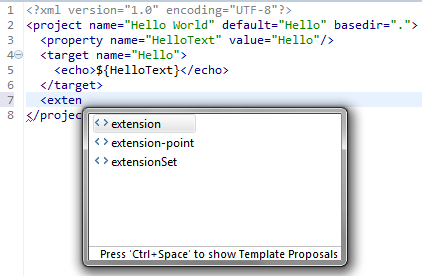
|
| Add all known buildfile types to Ant view |
The Buildfile Selection dialog for the Ant view has been updated to allow filtering
for all known kinds of build files rather than just *.xml and build.xml.
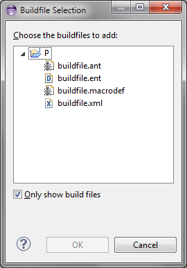
|
Editor Changes |
| Use saturated colors in overview ruler |
The new Use saturated colors in overview ruler preference allows to show the annotations in the Overview ruler using saturated colors:
 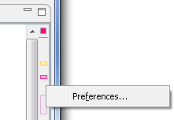
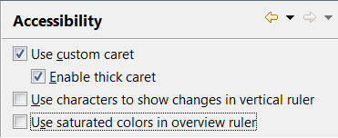
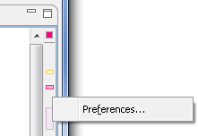
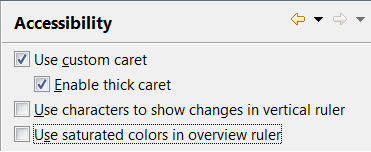
This option is turned off by default and can be enabled on the General > Editors > Text Editors > Accessibility
page.
|
Team/CVS Changes |
| Filters in CVS Sync View |
You can now use regular expressions to filter out changes in the CVS Synchronize view.
To enable filters go to Preferences > General > Team > CVS > Synchronize/Compare,
uncheck Only look at timestamps to detect changes and enter your regex pattern
in the Regular expression to ignore changes in synchronizations field. Each difference
in a change is checked against the pattern and is considered as matched, if either left or right side
of the difference matches. If all diffs in a file match, the file is excluded from the view.
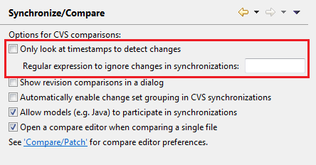
|
Debug Changes |
| Global debug toolbar |
To improve the presentation of the Debug perspective, the common debug control commands
(Stop, Resume, etc.) have been moved out of the Debug view and into the global toolbar.
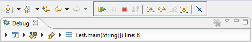
The global toolbar can be customized with the Window > Customize Perspective... action to add or
remove debugging commands, or to show/hide the debug toolbar completely.
Old toolbar behavior can be restored by first toggling the Show Debug Toolbar option in the Debug
view's menu, then by disabling the Debug toolbar from the Customize Perspective dialog.

|
| Improved editing of environment variables |
Editing multi-line environment variables is now much simpler with a new UI that presents the variables in a scrolling text widget.
The new UI can be found in the edit dialog for a multi-line environment variable on the Environment tab of a supporting launch configuration.
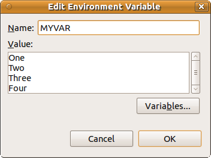
|
| Improved launch configuration name validation |
Now if you create a launch configuration with the name of an existing configuration, the type of the conflicting configuration
is noted in the error message.
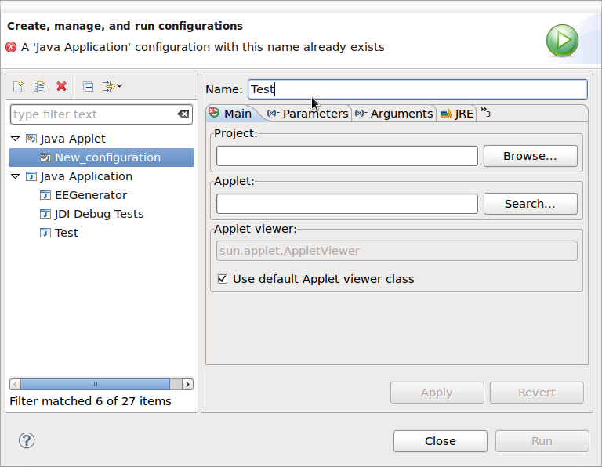
|
| Debug tracing |
JDT and Platform Debug have added all debug tracing settings to the Tracing preference page where they can be enabled and disabled as needed without restarting.

|
| Breakpoint view sorting |
The Breakpoints view now has improved sorting that will take into account any line
numbers that appear in the label and sort accordingly.
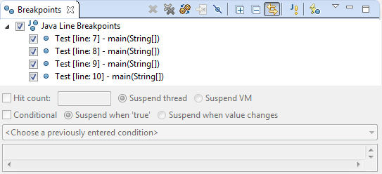
|